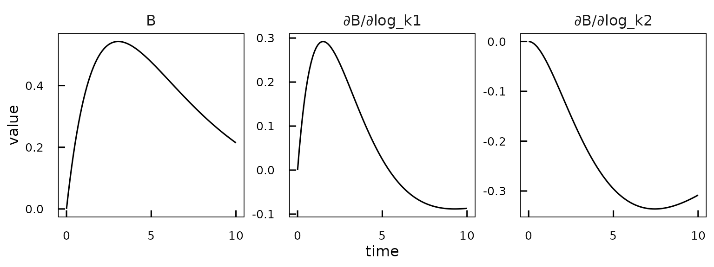

Forward sensitivities of the decay chain, the derivatives of the states in the initial values and parameters, of first and second order, and their seeding by a tangent. The generated code evaluates the right-hand side on dual numbers, the sensitivities are integrated together with the states (Forward sensitivities).
Model definition
deriv = TRUE (default of cppODE()) builds
first-order sensitivities in every state and parameter not named in
fixed. deriv2 = TRUE, or
derivMode = "forward-forward", adds the second order;
deriv = FALSE builds the states alone.
eqns <- c(A = "-k1*A", B = "k1*A - k2*B")
parms <- c(A = 1, B = 0, k1 = 0.5, k2 = 0.2)
times <- seq(0, 10, by = 0.1)
chain <- cppODE(eqns, modelname = "g3_chain", compile = FALSE)
rates <- cppODE(eqns, fixed = c("A", "B"), modelname = "g3_rates", compile = FALSE)
plain <- cppODE(eqns, deriv = FALSE, modelname = "g3_plain", compile = FALSE)
chain2 <- cppODE(eqns, deriv2 = TRUE, modelname = "g3_chain2", compile = FALSE)
compile(chain, rates, plain, chain2, output = "guide3", cores = 2)
attr(chain, "dimNames")$sens
#> [1] "A" "B" "k1" "k2"
attr(rates, "dimNames")$sens
#> [1] "k1" "k2"First-order sensitivities
$tangent has the dimensions
[time, state, sensitivity]; the entry
[t, i, j] is \(\partial
x_i(t)/\partial \theta_j\).
out <- solveODE(chain, times, parms)
dim(out$tangent)
#> [1] 101 2 4
out$tangent[101, , ]
#> sens
#> variable A B k1 k2
#> A 0.006738521 0.0000000 -0.06737644 0.000000
#> B 0.214327979 0.1353353 -0.17347569 -1.541163fixed of solveODE() holds sensitivities
fixed in one call, without recompiling; fixed of
cppODE() leaves them out of the generated code.
Reparametrization by a tangent
tangent of solveODE() is the
Jacobian \(\partial(x_0,
p)/\partial\theta\) of a reparametrization. The result is then
\(\partial x/\partial\theta\), one
column per direction, and the cost grows with the number of columns.
Three shapes are told apart by the rows:
| rows | meaning |
|---|---|
| a subset of states and parameters, by name | partial: the missing rows are zero |
| all states and parameters, states first | full: the whole Jacobian of the reparametrization |
| the states only | state-only: the parameter rows are the identity on the sensitivities |
A partial tangent with the unit vectors of k1 and
k2 gives the reduced sensitivities, a single column a
directional derivative.
S <- diag(2)
dimnames(S) <- list(c("k1", "k2"), c("k1", "k2"))
solveODE(chain, times, parms, tangent = S)$tangent[101, , ]
#> sens
#> variable k1 k2
#> A -0.06737644 0.000000
#> B -0.17347569 -1.541163
v <- matrix(c(1, -1), 2, dimnames = list(c("k1", "k2"), "k1 - k2"))
solveODE(chain, times, parms, tangent = v)$tangent[101, , "k1 - k2"]
#> A B
#> -0.06737592 1.36768749
out$tangent[101, , "k1"] - out$tangent[101, , "k2"]
#> A B
#> -0.06737644 1.36768686The two directional results agree to the integration tolerance: the
step grid follows the tangent, see sensErrCon.
A full tangent of the rate constants on the log scale, \(k_i = e^{\theta_i}\), has the column \(\partial k_i/\partial \theta_i = k_i\).
Tlog <- rbind(matrix(0, 2, 2), diag(parms[c("k1", "k2")]))
dimnames(Tlog) <- list(names(parms), c("log_k1", "log_k2"))
outL <- solveODE(chain, times, parms, tangent = Tlog)
ggplot(longFormat(outL, "B"), aes(time, value)) +
geom_line() +
facet_wrap(~panel, scales = "free_y") +
scale_x_continuous(n.breaks = 3)
A state-only tangent is the shape of out$tangent[t, , ],
so one solve continues another, sensitivities included. The chain is
autonomous, so two solves over five time units agree with one over ten
to the integration tolerance.
Error control of the sensitivities
With sensErrCon = TRUE (default) the sensitivities enter
the error test and the first step, so they are resolved to the tolerance
like the states. sensErrCon = FALSE takes the steps of a
value run: cheaper, less accurate, and the sensitivities are the exact
derivative of the computed solution, as in the reverse mode.
ref <- solveODE(chain, times, parms, abstol = 1e-12, reltol = 1e-12)
off <- solveODE(chain, times, parms, sensErrCon = FALSE)
c(on = out$diagnostics$accepted, off = off$diagnostics$accepted,
value = outV$diagnostics$accepted)
#> on off value
#> 73 66 66
c(on = max(abs(out$tangent - ref$tangent)), off = max(abs(off$tangent - ref$tangent)))
#> on off
#> 7.049412e-06 6.375120e-05Second-order sensitivities
A model built with deriv2 = TRUE returns
$hessian,
[time, state, sensitivity, sensitivity], the second
derivatives of every state.
out2 <- solveODE(chain2, times, parms)
dim(out2$hessian)
#> [1] 101 2 4 4
out2$hessian[101, "B", , ]
#> sens2
#> sens1 A B k1 k2
#> A 0.0000000 0.000000 -0.17347569 -1.54116254
#> B 0.0000000 0.000000 0.00000000 -1.35335215
#> k1 -0.1734757 0.000000 0.48269750 0.04777426
#> k2 -1.5411625 -1.353352 0.04777426 12.28148382hessian of solveODE() is the second
derivative of the reparametrization, with the rows of
tangent and two dimensions of directions; the default
treats the inputs as affine in \(\theta\). On the log scale \(\partial^2 k_i/\partial\theta_i^2 =
k_i\):
Hlog <- array(0, c(4, 2, 2), dimnames = c(dimnames(Tlog), list(colnames(Tlog))))
Hlog["k1", "log_k1", "log_k1"] <- parms["k1"]
Hlog["k2", "log_k2", "log_k2"] <- parms["k2"]
solveODE(chain2, times, parms, tangent = Tlog, hessian = Hlog)$hessian[101, "B", , ]
#> sens2
#> sens1 log_k1 log_k2
#> log_k1 0.033937344 0.004778748
#> log_k2 0.004778748 0.183027618The diagonal agrees to the integration tolerance with \(k_i^2\,\partial^2 B/\partial k_i^2 + k_i\,\partial B/\partial k_i\) from the plain Hessian:
k <- parms[c("k1", "k2")]
k^2 * diag(out2$hessian[101, "B", c("k1", "k2"), c("k1", "k2")]) +
k * out2$tangent[101, "B", c("k1", "k2")]
#> k1 k2
#> 0.03393653 0.18302684The Hessian of one objective in many parameters is cheaper by forward over reverse (chapter 4).